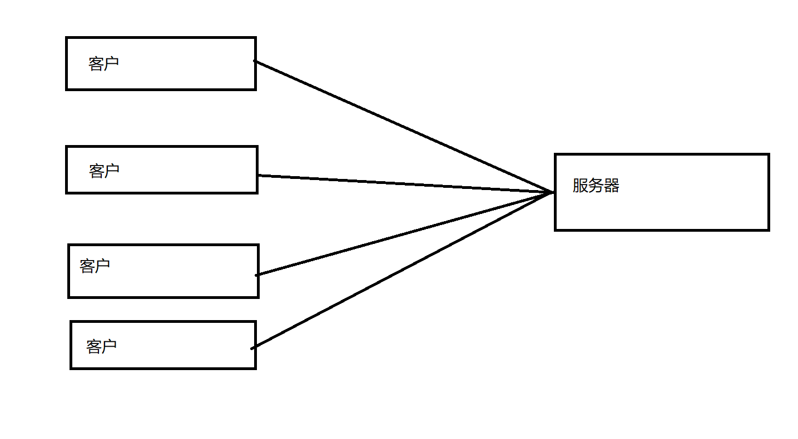
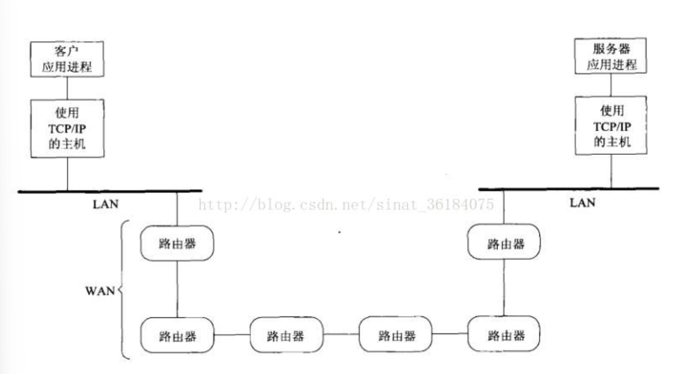
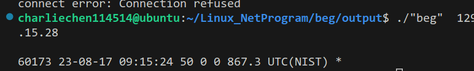
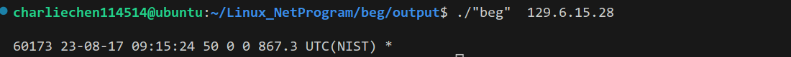

Unix网络编程 - 1
Unix网络编程
概述
我们一般认为Web服务器是一个长期运行的程序。一般的讲：我们的（通信）请求总是由客户发起的（想想某种浏览器）。大多数的网络应用都可以被划分成——客户（client）和服务器(server)
下图，你可以看到一个简单的模型
一般来讲，一个客户只跟一个服务器通信。但是一个服务器往往可以同时处理多个客户的请求（线程解决）

（可以看到上面的图中一个服务器可以处理多个客户的请求）

你也可以看到，这是一个客户和服务器通讯的一个基本的协议层次图。
客户与服务器之间的信息流在其中一端是向下通过协议栈的，跨越网络后，在另一端是向上通过协议栈的。客户和服务器通常是用户进程，而TCP和IP协议通常是内核中协议栈的一部分。
上图中术语IP自20世纪80年代以来一直在使用，其正式名称是IPv4（IP version 4），IPv4的新版本IPv6是在20世纪90年代中期开发出来的，将来会取代IPv4。
客户和服务器无需如上图一样都处于一个局域网（LAN），可通过路由器将两个局域网连接到广域网（WAN）：

路由器是广域网的架构设备。当今最大的广域网是因特网，许多公司也构建自己的广域网，这些私用的广域网既可以连接到因特网，也可以不连接。
一个简单的小程序
来看一个返回时间的网络小程序：
#include <unp.h>
int main(int argc,char** agrv)
{
int sockfd, n;
char recvline[MAXLINE + 1];
struct sockaddr_in servaddr;
if(argc != 2)
err_quit("usage: a.out <IPaddress>");
if((sockfd = socket(AF_INET, SOCK_STREAM, 0)) < 0)
err_sys("socket error");
bzero(&servaddr, sizeof(servaddr));
servaddr.sin_family = AF_INET;
servaddr.sin_port = htons(13); // daytime server
if(inet_pton(AF_INET, agrv[1], &servaddr.sin_addr) <= 0)
err_quit("inet_pton error for %s", agrv[1]);
if(connect(sockfd, (SA*)&servaddr, sizeof(servaddr)) < 0)
err_sys("connect error");
while((n = read(sockfd, recvline, MAXLINE)) > 0)
{
recvline[n] = 0; // null terminate
if(fputs(recvline, stdout) == EOF)
err_sys("fputs error");
}
if(n < 0)
err_sys("read error");
exit(0);
// have no daytime server
// try IPv4 129.6.15.28
} 我们对它进行编译：

可以尝试IP：129.6.15.28。这个IP可以链接成功并且返回当地时间的。
下面，我们来简单的看看这个程序
#include <stdio.h>
#include <stdlib.h>
#include <sys/socket.h>
#include <netinet/in.h>
#include <string.h>
#include <errno.h>
#define MAXLINE 512
int main(int argc, char **argv) {
int sockfd, n;
char recvline[MAXLINE + 1];
struct sockaddr_in servaddr; // 此结构位于头文件netinet/in.h
if (argc != 2) {
printf("usage: a.out <IPaddress>\n");
exit(1);
}
// 作为一种编码风格，作者在两个左括号间加了一个空格，提示比较运算的左侧同时也是一个赋值运算
// 这种风格借鉴自Minix源代码，下面的while语句也用了相同的格式
if ( (sockfd = socket(AF_INET, SOCK_STREAM, 0)) < 0) { // 创建一个网际（AF_INET）字节流（SOCK_STREAM）套接字，即TCP套接字，它返回一个小整数描述符，以后的函数调用（如connect和read函数）就用该描述符来标识这个套接字
printf("socket error\n");
exit(1);
}
bzero(&servaddr, sizeof(servaddr)); // bzero函数位于头文件string.h，把指定字节大小的地址区域都置为0字节
servaddr.sin_family = AF_INET; // 置地址族为AF_INET
servaddr.sin_port = htons(13); // daytime server的端口号为13，htons函数将短整型变量从主机字节顺序转变成网络字节顺序（高位字节存在低地址处）
if (inet_pton(AF_INET, argv[1], &servaddr.sin_addr) <= 0) { // inet_pton函数将点分十进制IP地址转换为二进制
// inet_pton函数是支持IPv6的新函数，以前的代码使用inet_addr函数将ASCII点分十进制串变成正确形式，但inet_addr函数有很多局限，这些局限都在inet_pton函数中被纠正
printf("inet_pton error for %s\n", argv[1]);
exit(1);
}
// connect函数与它的第二个参数指向的套接字地址结构所指定的服务器建立TCP连接
// 第三个参数是这个套接字地址结构的长度，对于网际套接字地址结构，我们总是使用C语言的sizeof操作符由编译器来计算这个长度
// 第二个参数我们用sockaddr类型指针指向了sockaddr_in类型，因为sockaddr类型是通用套接字地址结构
// 每当一个套接字函数需要一个指向某个套接字地址结构的指针时，这个指针必须强制类型转换成一个指向通用套接字地址结构的指针
// 这是因为套接字函数早于ANSI C标准，20世纪80年代开发这些函数时，ANSI C的void *指针类型还不可用
// 但转换时，struct sockaddr长达15个字符，往往造成源代码超出屏幕右边缘，因此我们可以使用#define将其简化为SA
if (connect(sockfd, (struct sockaddr *)&servaddr, sizeof(servaddr)) < 0) { // sockaddr结构位于头文件sys/socket.h
printf("connect error\n");
perror("connect"); // perror函数将其参数和errno所对应的错误一起输出到标准错误
exit(1);
}
// 此处需要while循环，因为服务器可能会将TCP分节，我们一次只能读取单个分节，需要一直读取，直到read函数返回0（对端关闭连接）或负数（发生错误），此程序中，服务器关闭连接表示记录接收结束
while ( (n = read(sockfd, recvline, MAXLINE)) > 0) {
recvline[n] = 0; // null terminate
if (fputs(recvline, stdout) == EOF) {
printf("fputs error\n");
exit(1);
}
}
if (n < 0) {
printf("fputs error\n");
}
exit(0); // 结束程序，内核会关闭所有打开的文件描述符，套接字就此被关闭
} 我们的socket函数创建了一个叫网际字节流的东西（AF_INET SOCK_STREAM）。返回的是一个整形描述符，我们就是用它来代替链接进行后续的操作
这里有一个技巧：请看
if ( (sockfd = socket(AF_INET, SOCK_STREAM, 0) ) < 0) 实际上，这里使用了C语言的一个重要的特性：也就是运算符优先级
sockfd = socket(AF_INET, SOCK_STREAM, 0);
if(sockfd < 0){
...
} 这是跟上面的话是等效的。
随后，我们指定服务器的IP地址和端口：服务器的IP地址和端口号填入一个网际套接字地址结构（一个名为servaddr的sockaddr_in结构变量）。网际套接字地址结构中IP地址和端口号这两个成员必须使用特定格式，htons（“主机到网络短整数”）去转换二进制端口号，inet_pton(“呈现形式到数值”)把ASCII命令行参数转换为合适的格式。
接着，当我们指定好了服务器的IP地址和端口之后，实际上我们就是知道了服务器的位置，下面就是建立联系。
connect函数应用于一个TCP套接字时，将与由它的第二个参数指向的套接字地址结构指定的服务器建立一个TCP连接。该套接字结构的长度也必须作为该函数的第三个参数指定，对于网际套接字地址结构，用sizeof操作符指定。每当一个套接字函数需要一个指向某个套接字地址结构的指针时，这个指针必须强制类型转换成一个指向通用套接字地址结构的指针。
建立联系后就是拿到服务器的数据了：**读入并输出服务器的应答**：通常服务器返回包含所有字节的单个分节，但是如果数据量很大，就不能保证一次read调用能返回服务器的整个应答。因此从TCP套接字读取数据时，总是需要把read编写在某个循环中，当read返回0（表明对端关闭连接）或者负值（表明发生错误）时终止循环。
这就是我们拿到的联系：

注意到我们这里并没有转化为我们可以读到的格式。
为什么我们要：
while ( (n = read(sockfd, recvline, MAXLINE)) > 0) {
recvline[n] = 0; // null terminate
if (fputs(recvline, stdout) == EOF) {
printf("fputs error\n");
exit(1);
}
} 呢？答案是，我们没有办法保证我们一次就可以读完所有的数据。如果数据量很大，我们就不能确保一次read调用能返回服务器的整个应答，因此从TCP套接字读取数据时，我们总是需要把read函数编写在某个循环中，当read函数返回0（表明对端关闭连接）或负值（表明发生错误）时终止循环。
上例中，服务器关闭连接表征记录的结束，HTTP（Hypertext Transfer Protocol，超文本传送协议）的1.0版本也采用这种技术。也可用其他技术标识记录结束，如SMTP（Simple Mail Transfer Protocol，简单邮件传送协议）使用由ASCII回车符后跟换行符构成的2字节序列标记记录的结束；Sun远程过程调用和域名系统在每个要发送的记录前放置一个二进制计数值，给出这个记录的长度。这里的重要概念是TCP本身不提供记录结束标志，应用需要自己实现记录边界的确定。
我们的协议使用的是IPv4，注意到的是他不可以直接搬到IPv6上运行。我们需要做一些修改
#include <stdio.h>
#include <stdlib.h>
#include <sys/socket.h>
#include <netinet/in.h>
#include <string.h>
#include <errno.h>
#define MAXLINE 512
int main(int argc, char **argv) {
int sockfd, n;
char recvline[MAXLINE + 1];
// struct sockaddr_in servaddr;
struct sockaddr_in6 servaddr;
if (argc != 2) {
printf("usage: a.out <IPaddress>\n");
exit(1);
}
// if ( (sockfd = socket(AF_INET, SOCK_STREAM, 0)) < 0) {
if ( (sockfd = socket(AF_INET6, SOCK_STREAM, 0)) < 0) {
printf("socket error\n");
exit(1);
}
bzero(&servaddr, sizeof(servaddr));
// servaddr.sin_family = AF_INET;
servaddr.sin6_family = AF_INET6;
// servaddr.sin_port = htons(13);
servaddr.sin6_port = htons(13);
// if (inet_pton(AF_INET, argv[1], &servaddr.sin_addr) <= 0) {
if (inet_pton(AF_INET6, argv[1], &servaddr.sin6_addr) <= 0) {
printf("inet_pton error for %s\n", argv[1]);
exit(1);
}
if (connect(sockfd, (struct sockaddr *)&servaddr, sizeof(servaddr)) < 0) {
printf("connect error\n");
perror("connect");
exit(1);
}
while ( (n = read(sockfd, recvline, MAXLINE)) > 0) {
recvline[n] = 0;
if (fputs(recvline, stdout) == EOF) {
printf("fputs error\n");
exit(1);
}
}
if (n < 0) {
printf("fputs error\n");
}
exit(0);
} 当然一个更好的做法是去编写一个与协议无关的程序——这个我们之后再说。
以上程序的另一个不足之处是，用户必须以点分十进制数格式给出服务器的IP地址，人们更习惯于用域名来代替数字。
以上程序中，当函数调用发生错误时，我们输出一个出错消息并终止程序运行，这是大多情况下的做法，个别情况下，我们要做的事并非简单地终止程序运行，如需要检查系统调用是否被中断了。既然大多情况下发生错误时需要终止程序，我们可以定义包裹函数来缩短程序，每个包裹函数完成实际的函数调用，检查返回值，并在发生错误时终止进程。包裹函数名一般是实际函数名的首字母大写形式，这是约定，如：
int Socket(int family, int type, int protocol) {
int n;
if ( (n = socket(family, type, protocol)) < 0) {
err_sys("socket error\n");
exit(1);
}
return n;
} 这是一个良好的编程习惯（即handle我们的异常值和处理，同时简化代码，屏蔽掉无关竟要的细节）
熟知Unix系统编程的知道：errno值可以用来衡量错误是啥。但是一些函数是开在线程中的，我们需要手动的设置errno值并且返回调用端。
线程函数在遇到错误是并不设置标准Unix errno变量，而是把errno的值作为函数返回值返回调用者，我们每次调用以pthread_开头的函数时，必须分配一个变量来存放函数返回值，以便在输出错误消息前把errno变量设置为该值void Pthread_mutex_lock(pthread_mutex_t *mptr) {
int n;
if ( (n = pthread_mutex_lock(mptr)) == 0) {
return;
}
errno = n;
err_sys("pthread_mutex_lock error");
}扩展：Unix的errno值
只要一个Unix函数中有错误发生，全局变量errno就被置为一个指明该错误类型的正值，函数本身则通常返回-1。自定义函数err_sys查看errno变量的值并输出相应的出错消息，如errno值等于ETIMEDOUT时，输出”Connection timed out”。
errno的值只在函数发生错误时设置，如果函数没有出错，errno的值就没有定义。errno的所有正数错误值都是常值，并有以E开头的全大写字母名，并通常在
一个简单的时间获取服务器程序
#include <unp.h>
#include <time.h>
int main()
{
int listenfd, connfd;
struct sockaddr_in servaddr;
char buff[MAXLINE];
time_t ticks;
listenfd = Socket(AF_INET, SOCK_STREAM, 0);
bzero(&servaddr, sizeof(servaddr)); // 初始化
servaddr.sin_family = AF_INET;
servaddr.sin_addr.s_addr = htonl(INADDR_ANY);
servaddr.sin_port = htons(13);
Bind(listenfd, (SA *)&servaddr, sizeof(servaddr));
Listen(listenfd, LISTENQ);
for (;;)
{
connfd = Accept(listenfd, (SA *)NULL, NULL);
ticks = time(NULL);
snprintf(buff, sizeof(buff), "%.24s\r\n", ctime(&ticks));
Write(connfd, buff, strlen(buff));
Close(connfd);
}
return 0;
}
上述的城西完成了这几个动作：
监听套接字：listen函数将套接字转换成一个监听套接字，这样来自客户的外来连接就可在该套接字上由内核接受。LISTENQ指定系统内核允许在这个监听描述符上排队的最大客户连接数。
接受客户连接，发送应答：通常情况，服务器进程在accept调用中被投入睡眠，等待某个客户连接的到达并被内核接受。TCP连接使用三路握手来建立连接，握手完毕accept返回一个已连接描述符，用于与客户通信。
终止连接：服务器通过close关闭与客户的连接。该调用引发正常的TCP连接终止序列：每个方向上发送一个FIN，每个FIN又由各自对端确认
#include "unp.h"
#include <time.h>
int main(int argc, char **argv) {
int listenfd, connfd;
struct sockaddr_in servaddr;
char buff[MAXLINE];
time_t ticks;
listenfd = Socket(AF_INET, SOCK_STREAM, 0);
bzero(&servaddr, sizeof(servaddr));
servaddr.sin_family = AF_INET;
servaddr.sin_addr.s_addr = htonl(INADDR_ANY);
servaddr.sin_port = htons(13); /* daytime server */
Bind(listenfd, (SA *)&servaddr, sizeof(servaddr));
// 调用listen函数将该套接字转换成一个监听套接字，这样来自客户的外来连接就可以在该套接字上由内核接收
// LISTENQ在头文件unp.h中定义，它指定系统内核允许在这个监听描述符上排队的最大客户连接数
Listen(listenfd, LISTENQ);
// socket、bind、listen这3个调用步骤是任何TCP服务器准备监听描述符的正常步骤
for (; ; ) {
// 通常，服务器进程在accept调用中被投入睡眠，等待某个客户连接的到达并被内核接受
// TCP使用三路握手来建立连接，握手完毕时accept函数返回，其返回值是一个称为已连接描述符的新描述符，该描述符用于同新近连接的那个客户通信
// accept函数为每个连接到本服务器的客户返回一个新描述符
connfd = Accept(listenfd, (SA *)NULL, NULL);
// time函数返回自Unix纪元（即19700101000000）以来的秒数
ticks = time(NULL);
// 相比于sprintf函数，snprintf函数要求其第二个参数指定目的缓冲区大小，因此可确保该缓冲区不溢出
// snprintf函数在ISO C99版本中才加入到ANSI C标准中，但几乎所有厂商都把它作为标准C函数库的一部分提供，出于可靠性考虑，可将其改为sprintf函数
// 但许多网络入侵是由黑客通过发送数据，导致服务器对sprintf调用使其缓冲区溢出而发生的
// 需要小心的函数还有gets、strcat、strcpy，通常应分别改为fgets、strncat、strncpy函数，更好的替代函数是strlcat和strlcpy，它们确保结果是正确终止的字符串
snprintf(buff, sizeof(buff), "%.24s\r\n", ctime(&ticks)); // %.24s表示最多打印24个字符，ctime函数返回一个25个字节的串，如"Wed Jun 30 21:49:08 1993\n"
// %24s表示最少打印24个字符
Write(connfd, buff, strlen(buff));
// 通过close调用关闭与客户的连接，该调用引发正常的TCP连接终止序列：每个方向上发送一个FIN，每个FIN又由各自的对端确认
Close(connfd);
}
}OSI
国际标准化组织（International Organization for Standardization，ISO）的开放系统互连（Open Systems Interconnection，OSI）模型，这是一个七层模型（图中还给出了它与网际协议族的近似映射）：

我们认为OSI模型的底下两层是随系统提供的设备驱动程序和网络硬件，通常，除需知道数据链路层的某些特性外（如1500字节的以太网MTU大小），我们不关心这两层情况。
上图网际协议族中，传输层的TCP和UDP中间留有空隙，表明网络应用可能绕过传输层直接使用IPv4或IPv6，这是所谓的原始套接字。我们甚至可以绕过IP层直接读写数据链路层的帧。
OSI模型的顶上三层在网际协议中被合并为一层，称为应用层，这是Web客户（浏览器）、Telnet客户、Web服务器、FTP服务器和其他我们使用的网络应用所在的层。对于网际协议，OSI模型的顶上三层协议几乎没有区别。
本书讲述的套接字编程接口是从OSI的顶上三层（即网际协议的应用层）进入传输层的接口。为什么套接字提供的是从OSI模型的顶上三层进入传输层的接口？这样设计有两个理由：一是顶上三层处理具体网络应用（如FTP、Telnet、HTTP）的所有细节，却对通信细节了解很少；底下四层对具体网络应用了解不多，却处理所有通信细节（发送数据、等待确认、给无序到达的数据排序、计算并验证校验和等）。二是顶上三层通常构成所谓用户进程，底下四层通常作为操作系统内核的一部分提供，Unix与其他现代操作系统都提供分隔用户进程与内核的机制。由以上可见，OSI模型的第4层和第5层之间的接口是构建API的自然位置。
题外话
如果发现配置完成了但是再VScode下还是会爆出undefined reference的问题，可以直接采用自己编译的方式，也就是在命令行中
gcc -o result file.c /usr/lib/libunp.a 的方式。当然，自己找到file.c和libunp.a的位置！